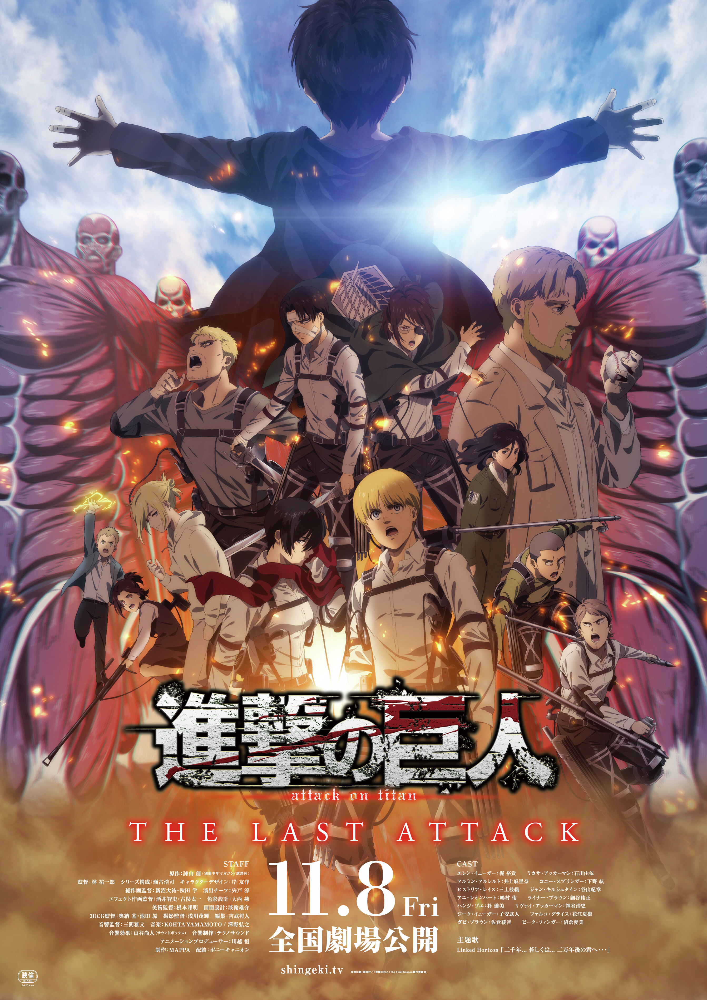
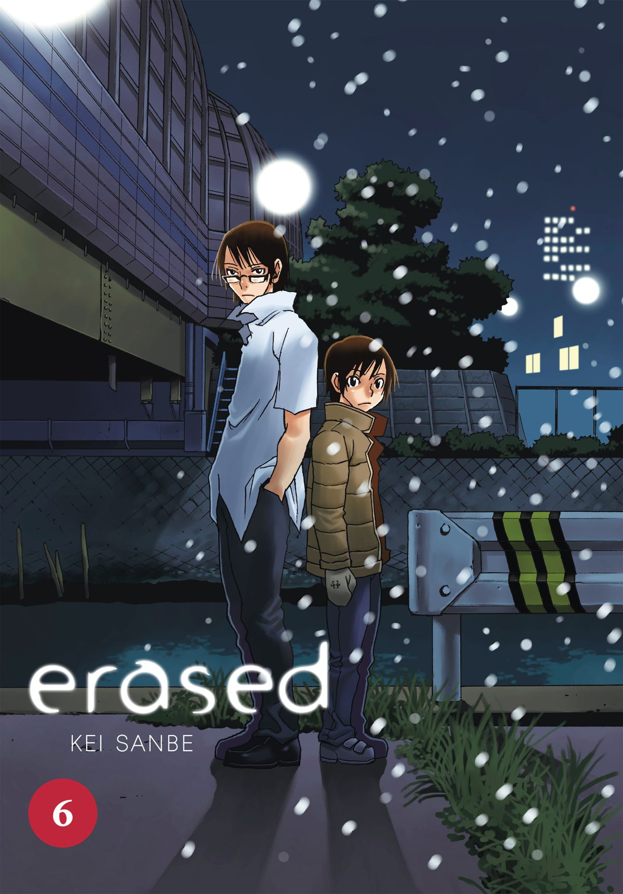
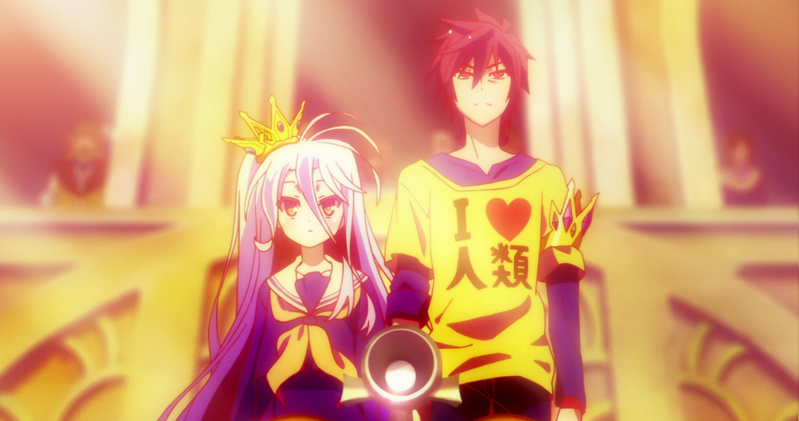
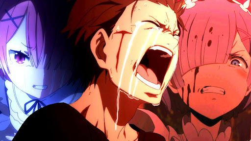
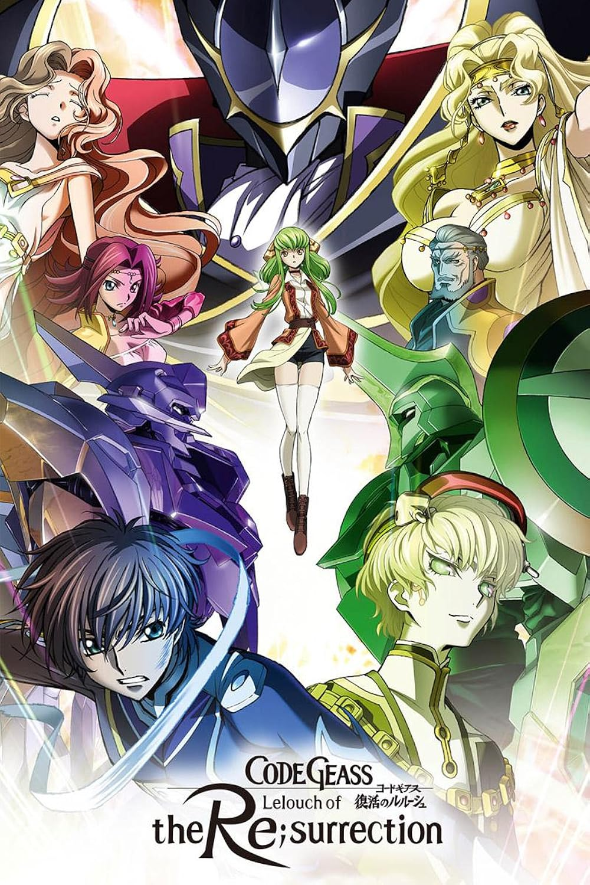
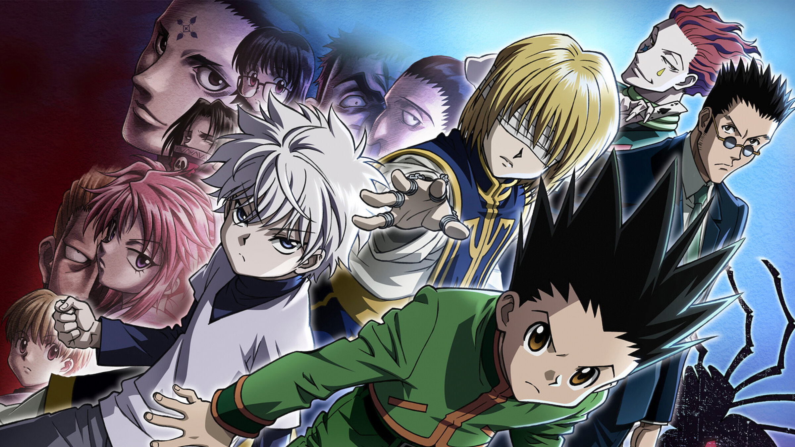
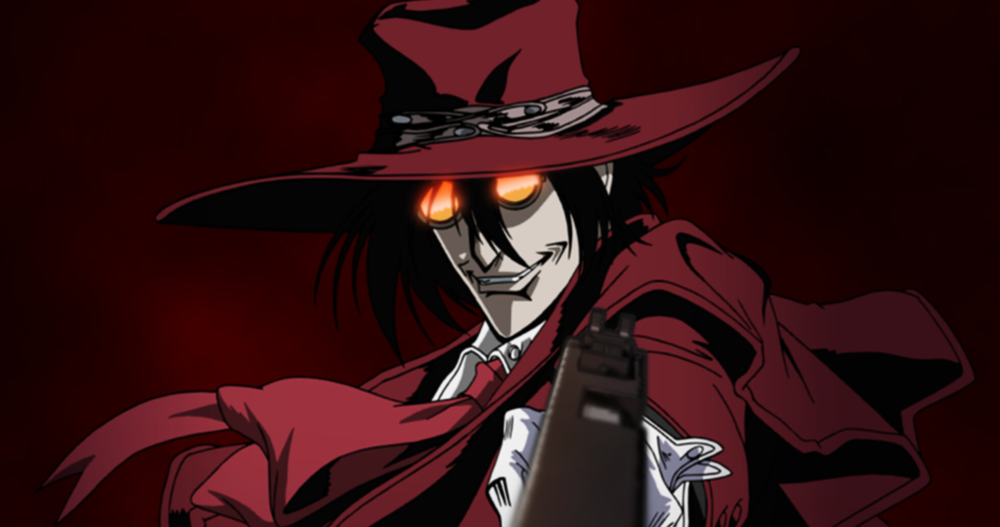
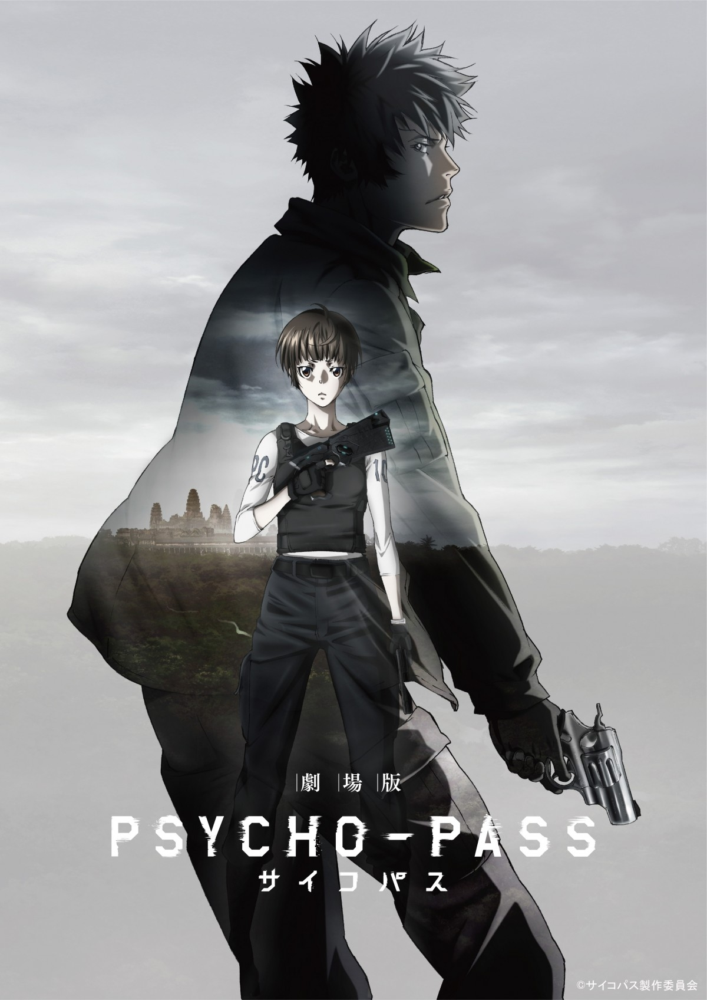
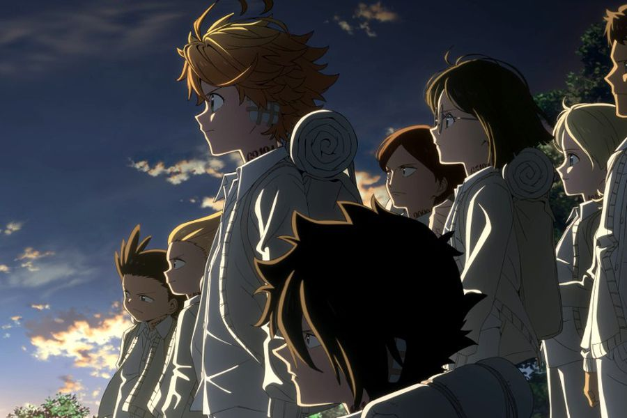

Animes populares en Gogoanime

Attack on Titan
La humanidad lucha por sobrevivir tras los muros contra titanes devoradores.
- Temporadas 1-4 (final)

Parasyte
Parásitos invaden cuerpos humanos. Un joven lucha junto a uno para sobrevivir.
- Única temporada: 24 episodios

Erased
Un adulto viaja al pasado en su infancia para prevenir un asesinato.
- Temporada única: 12 episodios

No Game No Life
Hermanos genios entran a un mundo donde todo se decide por juegos.
- Temporada 1 + película

Re:Zero
Un joven revive una y otra vez al morir en un mundo fantástico.
- Temporadas 1-2

Code Geass
Un príncipe exiliado obtiene un poder para controlar mentes y buscar venganza.
- 2 temporadas + películas

Hunter x Hunter
Un niño busca a su padre y se convierte en cazador de élite.
- 148 episodios

Hellsing Ultimate
Una organización de cazadores de vampiros combate lo sobrenatural en Europa.
- 10 OVAs

Psycho-Pass
Una sociedad futurista controla el crimen analizando el estado mental de las personas.
- Temporadas 1-3

The Promised Neverland
Niños en un orfanato descubren la verdad aterradora de su hogar.
- 2 temporadas